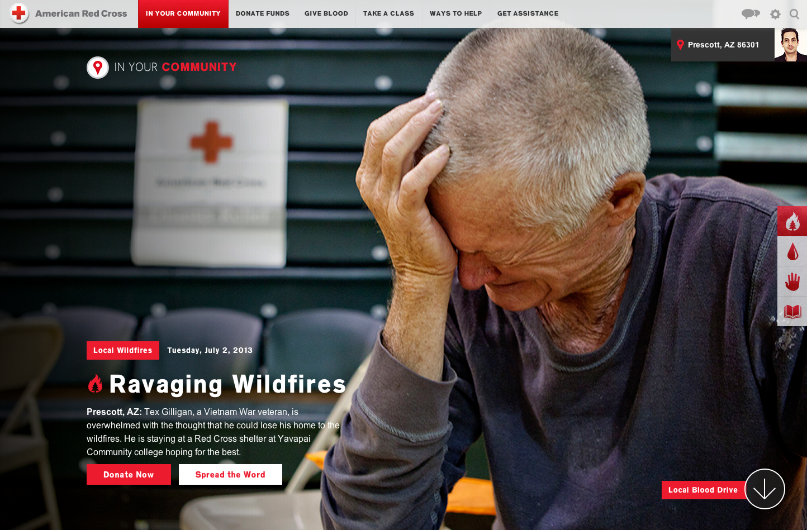
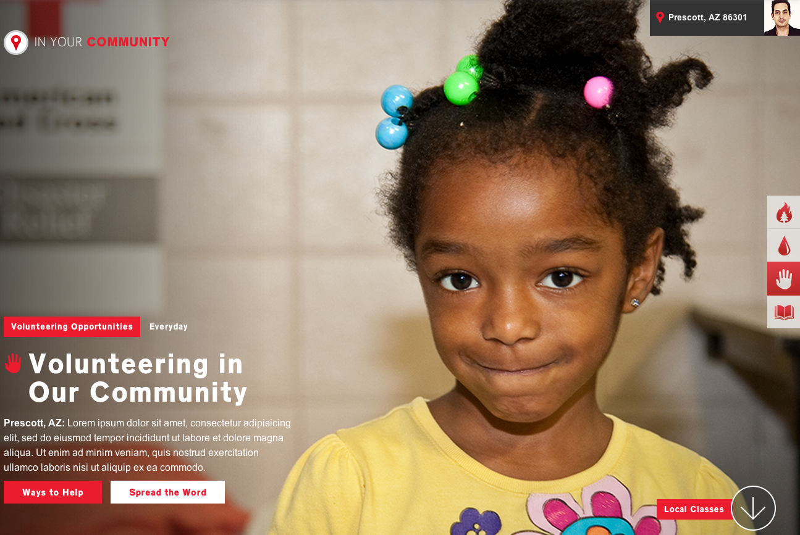
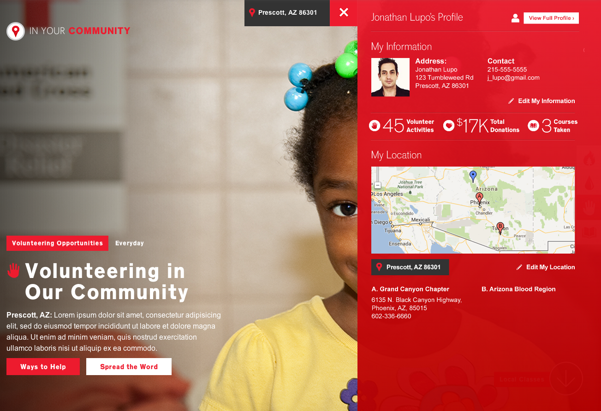
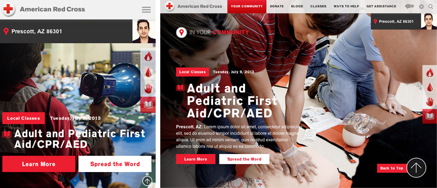

American Red Cross
Responsive Prototype
History of Redcross.org
Prior to launch, Redcross.org was for the national headquarters only and chapters maintained their own websites.
Redcross reached out to Empathy Lab because they wanted better control over the content at their national headquarters
Their marketing team was working on a new marketing/branding camapaign and they wanted to align their digital marketing material to the new updated look/feel.
Primary Objectives
- Consolidate the user experience onto a single, unified ATG platform
- Leverage the personalization/localization capabilities for their regional content
- Leverage ATG’s premier transactional functionality for the donations and courses sections
Kickoff
The digital engagement with ARC took about 18 months with a huge team here at Empathy Lab
This time included systems integration which was handled by McFayden
(SHOW Redcross.org site/ Go through a donation flow)
What have you done for me lately
Since launch we have worked on the following digital marketing initiatives for RedCross.org:
- Digital strategy on Global Giving platform
- Transactional tool for giving, still in early stages
- Face to Face
- App for fundraisers for collecting donations, provided UX/D/FED)
- 1-Click and Tribute (modified flows for donations giving)
Come at me bro/Challenges Faced:
Issues with SI
- Not accountatble
- No visibility into their schedule and process
- Making changes after pages have already been integrated
Reasons for a Redesign:
- Existing website needed a more contemporary user experience
- Current experience is over a year old
- Wanted a more unified user experience across connected devices
Vision
- More Engaging
- Hyper-Local
- Personal
- App-Like
- Focused
More Engaging
- Increase the scale and use of ARC's high-quality, photographic assets

Hyper-local
- Engage the end-user by communicating news and information related to their local community

Personal
- Update the user about their progress towards personal achievement and charitable giving goal completion

App-like
- Make the experience "feel-at-home" on any device

Focused
- Keep the user on-task
- Devote the entire canvas to relevant tasks within each content category
- Unclutter the experience by removing unnecessary Design elements or extraneous navigation and calls-to-action
Responsive Technology
ARC Staging
- ELF (responsive framework using middleman)
- Stellar js (responsive parallax) / jQuery Waypoints
- SASS/Compass mixins like for handling retina graphics
- webkit-overflow-scrolling
- Chun's technique for responsive layout with a fixed width column
The Technique
We originally used on USA Prototype's Social Page.
On USA we knew the width of the ad column had to be fixed but the feed area to the left needed to be responsive.
The layout for the courses page on the ARC prototype needed to react the same way.
.courses-wrap {
overflow: hidden;
padding-left: 345px;
}
.filters,
.results {
float: left;
}
.filters {
width: 345px;
margin-left: -345px;
}
.results {
width: 100%;
}